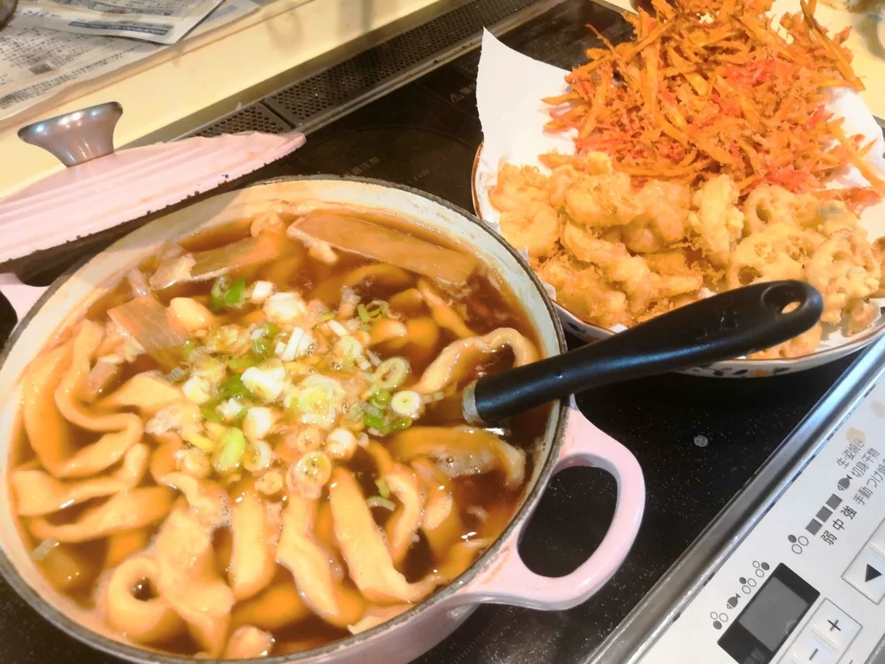

お好み焼き・うどん
卵とおからパウダーの基本のお好み焼き
おからパウダー30gと卵2個で作る、小麦粉を生地に入れないお好み焼きです。キャベツや長ネギ、豚肉などを合わせ、私はソースとマヨネーズにからし
用意したおから入りほうとう麺を、大根の入っためんつゆで直接煮込む料理です。麺を別の鍋でゆでずに、つゆと一緒に煮上げます。もちもちした麺に、大根と甘辛いつゆがよく合います。 ### 作る前に用意するもの ここからの手順は、調理前のおから入りほうとう麺を3食分、用意してあることが前提です。まず麺を用意し、次に大根とつゆを鍋に入れ、最後に麺を煮込む順番で進めてください。 麺作りの参考になるのは、です。では、その基本のほうとうに「おからパウダー1割程度」を加えたと記録しています。ただし、おからを混ぜた時の粉の絶対量や水の量は示されていないため、この記載だけでおから入り麺を一から作る配合は決まりません。 前の無塩手打ちうどんとは別の料理なので、その粉や水の分量を、このほうとう麺の配合として使わないようにしましょう。

調理前のおから入りほうとう麺を用意して使う活用例です。元記事に麺の配合が示されていないため、本書では麺から作る完全なレシピとしては扱いません。
煮込み時間は、元記事では12分程度が目安です。太く厚く切った麺は、表面がやわらかくても、中心まで火が通っていないことがあります。
確かめる時は、麺を切って断面を見てください。生の粉が残っている麺は味見せず、十分に煮ます。大根がやわらかくなったかも確かめてから仕上げましょう。
元記事では、麺の打ち粉の片栗粉で汁に少しとろみがつき、麺によく絡んだと紹介しています。ここで片栗粉を新たに足す手順はありません。
加熱時間は作った時の目安です。容器や調理器具によって仕上がりは変わります。中心まで火が通っていることを確認してください。
おから入りほうとう煮込み（麺を用意して作る）の材料・作り方（50kgdiet.com） →
このページは書籍の改訂原稿をもとに掲載しています。元記事は過去の記録のため、材料や表現が異なる場合があります。